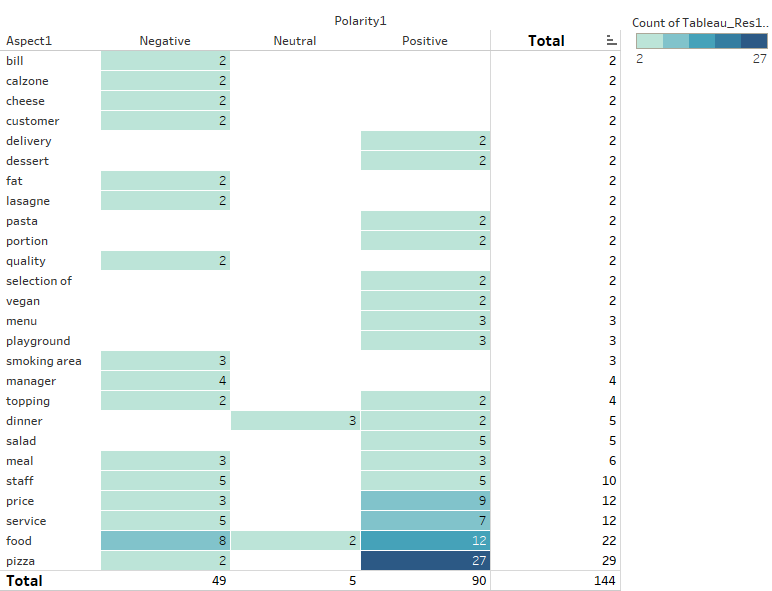
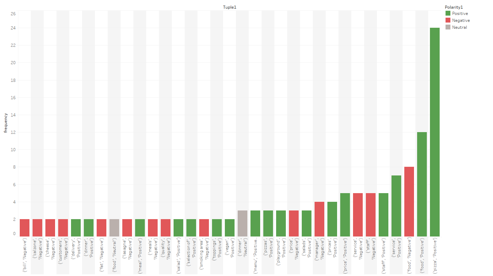
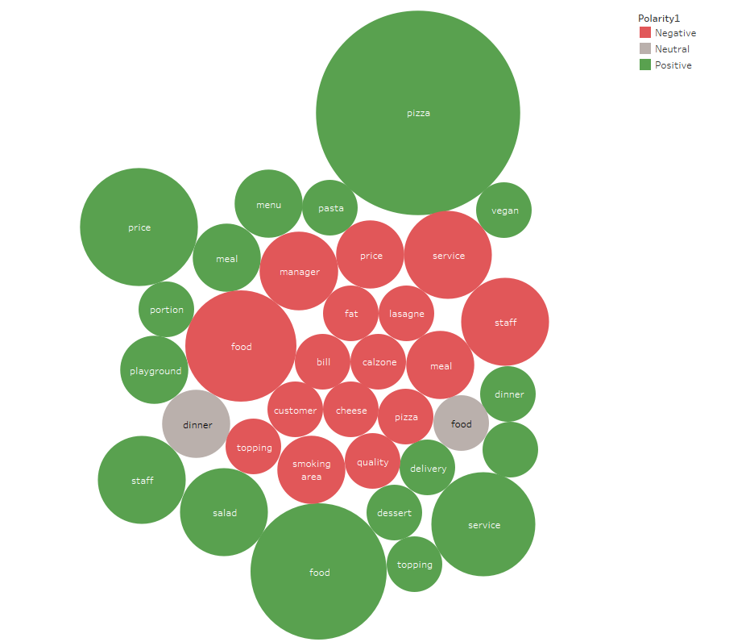
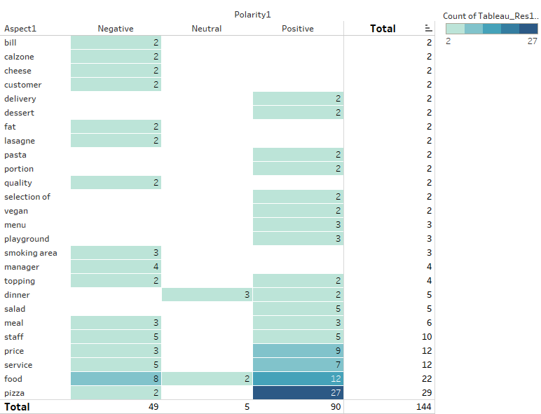
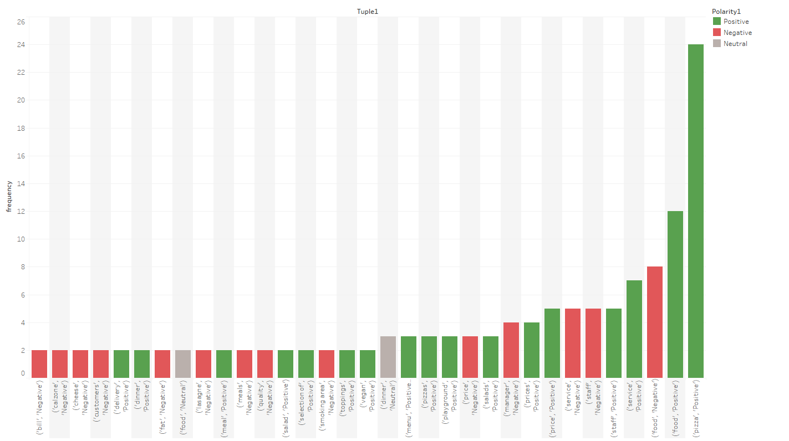
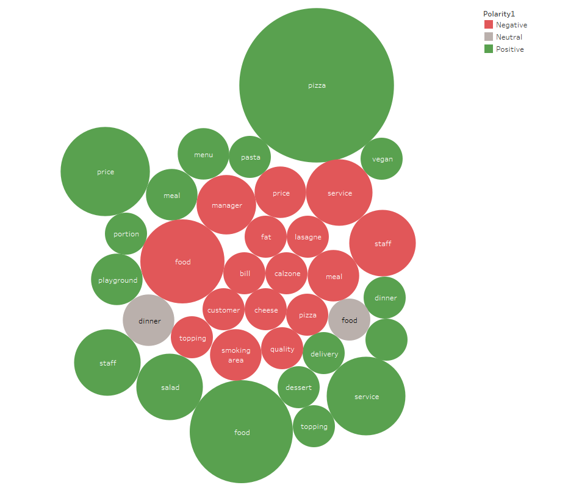

Introduction
Aspect-Based Sentiment Analysis (ABSA) is a sophisticated natural language processing technique that determines the sentiment associated with specific aspects of a product, service, or entity. This project explored its application in analyzing customer reviews to identify actionable insights for businesses.
Key Features
- Dataset: Client data: *Due to NDA agreements and confidentiality, results shown here will be based on hotel and restaurant reviews collected through various online sources*
- Techniques: Preprocessing, Aspect Extraction, Sentiment Classification
- Tools: Python, NLTK, Scikit-learn, TensorFlow
- Results: Achieved 82% accuracy on SemEval-2014 Restaurant dataset and 79% accuracy on SemEval-2014 Hotels dataset
Methodology

The process involved:
- Data Preprocessing: Cleaning, tokenization, and stemming of text data.
- Aspect Extraction: Using unsupervised learning to identify key aspects.
- Sentiment Classification: Applying machine learning models to predict sentiment polarity.
Pipeline Structure & Model Architecture

The pipeline structure illustrates the steps from Aspect Term Extraction (ATE) to the sentiment classification of each aspect term and the final post-processing to collate Aspect Terms with their related Sentiment Labels. The model architecture showcases the machine learning model used for sentiment prediction.
Visuals & Results


 





The results demonstrate a significant correlation between sentiment polarity and customer satisfaction. The system successfully highlighted positive and negative aspects for various categories.
Conclusion & Takeaways
This project provided valuable insights into the power of ABSA in real-world applications. It reinforced the importance of robust data preprocessing and feature engineering for achieving high model accuracy. Future work could include extending the model to multilingual datasets and exploring deep learning architectures.